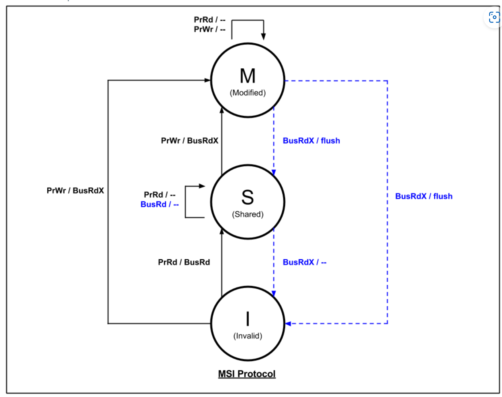
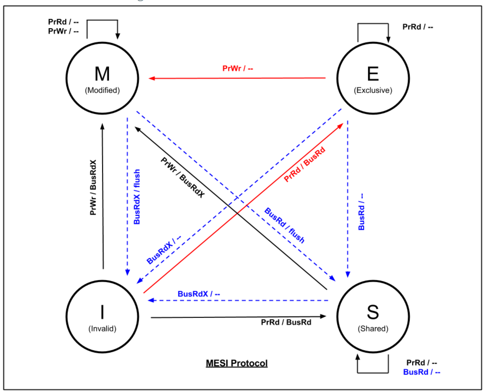
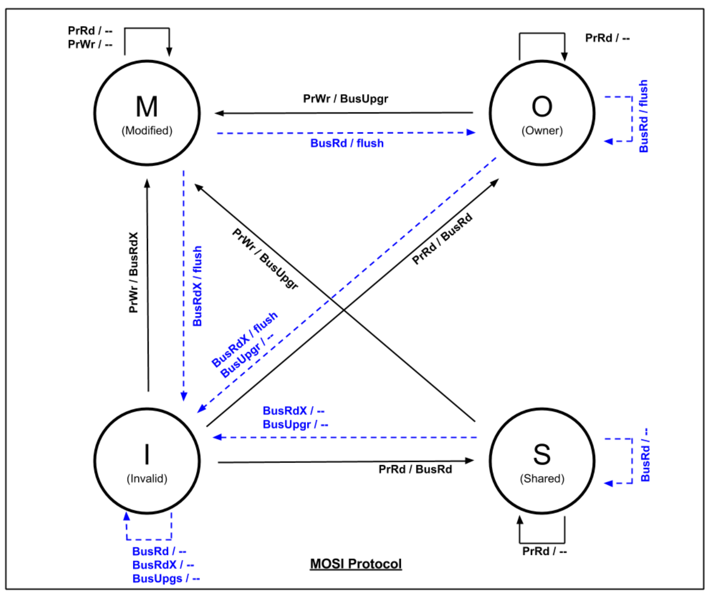
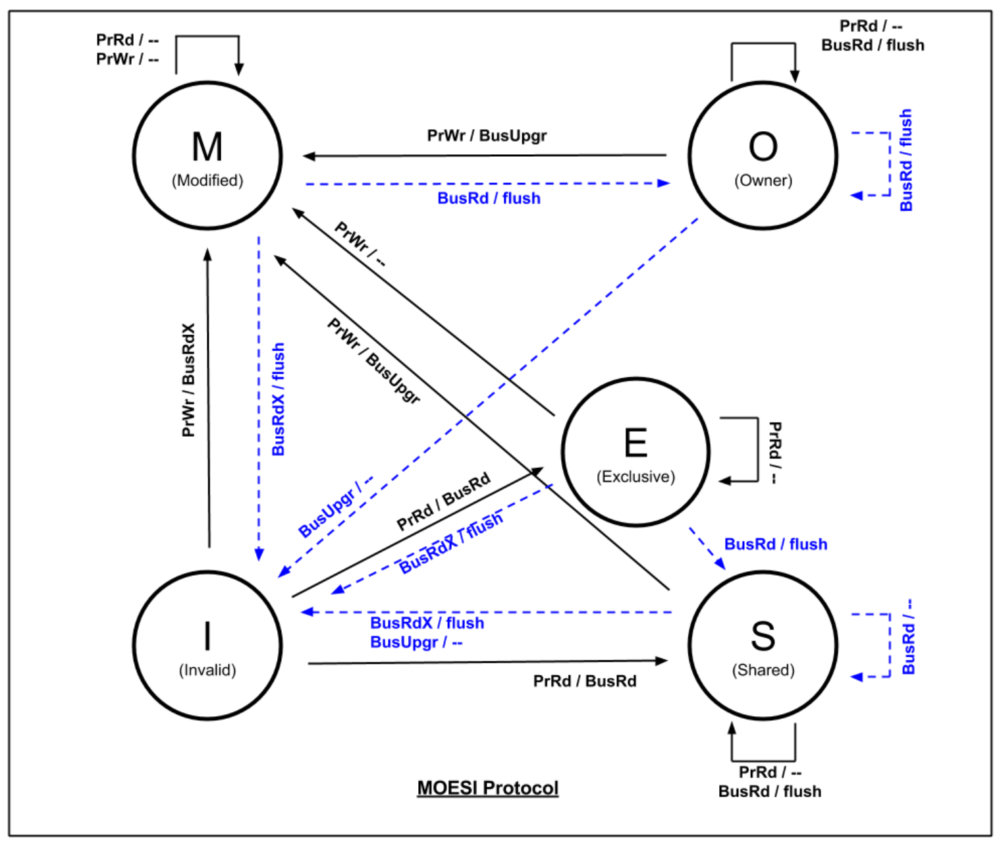

flowchart LR A[取指] --> B[执行]
四种FIFO
Lab4要求实现4种不同的FIFO，这些FIFO可以从不同程度上实现并发,也就是实现enqueue和dequeue方法。
一般来说主要有三种FIFO，分别是Depth-1 Pipeline FIFO, Depth-1 Bypass FIFO, Depth-2 ConflictFree FIFO. 这三种FIFO所需的面积最小。
与FIFO相比，FIFOF的优点是增加了notempty和notfull寄存器，可以很方便地判断空/满状态，缺点则是更多寄存器使得面积更大。
Conflict FIFO
不可以同时
enq和deqPipeline FIFO
满时可以同时进行
deq和enq{notEmpty, first, deq} < {notFull, enq} < clearBypass FIFO
空时可以同时进行
enq和deq{notFull, enq} < {notEmpty, first, deq} < clearConflict-Free FIFO 任何时候都可以同时进行
enq和deq
{notFull, notEmpty, deq, enq, first} < clearEHR寄存器
EHR寄存器是一种特殊的寄存器，可以同时进行寄存器的读取和写入操作，而不需要任何同步或者锁定机制，适用于流水线设计。缺点是EHR会导致关键路径过长，而且难以跟踪具体路径。
| r0 | w0 | r1 | w1 | |
|---|---|---|---|---|
| r0 | CF | < | CF | < |
| w0 | > | C | < | < |
| r1 | CF | > | CF | < |
| w1 | > | > | > | C |
其中，优先级依次是w1 > r1 > w0 > r0
Lab 5
单周期
双周期
四周期
flowchart LR A[取指] --> B[译码] B --> C[执行] C --> D[写回]
二级流水线
flowchart LR A[取指] --> B[执行]
六级流水线
flowchart LR A[取指] --> B[译码] B --> C[读寄存器] C --> D[执行] D --> E[访存] E --> F[写回]
Lab 6
BTB
包括当前指令的地址current_pc和预测地址predicted_pc. ## BHT
通常采用二位饱和计数器，包括当前指令的地址current_pc和计数器taken_prediction
BHT可以和BTB合并在一起保存，格式如：
| current_pc | predicted_pc | taken_prediction |
|---|---|---|
RAS
RAS仅用于函数返回地址的预测。
当程序执行到分支跳转指令时，RAS判断指令是否属于函数调用类型的分支跳转指令。若遇到rd = x1的JAL/JALR指令，则RAS将返回地址入栈; 若遇到rd = x0 && rs1 = x1的JALR指令，则从RAS出栈，作为函数返回地址使用。
Lab 7
Cache
Blocking Cache
阻塞式缓存在未命中时会向内存发出请求，等待内存响应后才能继续处理后续请求。
这种方式会导致处理器停顿，降低性能。
flowchart LR A[Ready] --> B[StartMiss] B --> C[SendFillReq] C --> D[WaitFillResp] D --> E[Resp]
- Ready: 处理器可以继续执行下一条指令
- StartMiss：处理器发出未命中请求
- SendFillReq：处理器发送访存请求到内存
- WaitFillResp：处理器等待内存响应
- Resp：处理器接收到内存响应
NonBlocking Cache
非阻塞式缓存能够在接收到未命中请求后，无须空等就能继续处理其他请求。
非阻塞式缓存的实现方式是MSHR。MSHR是一个队列，用于存储未命中的请求。
非阻塞式缓存的miss有三种：
- primary miss：某个块的第一次miss
- secondary miss：对某个已经在fetch的block中又一次miss。
- structural-stall miss：由于MSHR数量不够导致的miss，会发生阻塞。
MSI

MESI

MOSI

MOESI
